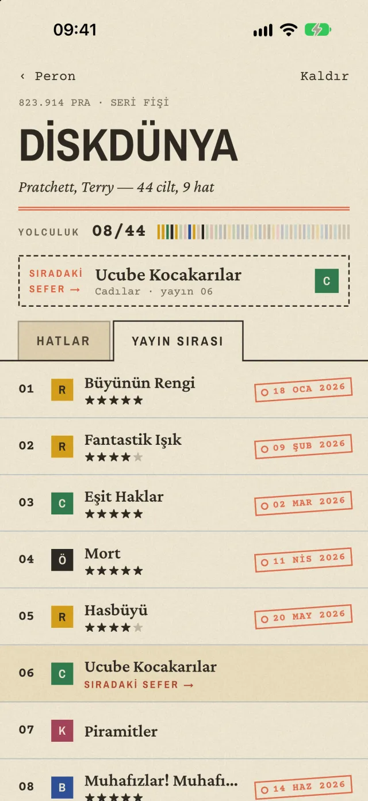

001.1 SERSERİLER
Seriler ve hatlar
Bir seriyi kendi okuma sıralarına böl. Her hat kendi renginde ilerler; çok kollu seriler de derli toplu durur.
Peron, okuma listeni bir kütüphane fişi ve tren bileti gibi tutar. Serileri hatlara böl, sıradaki kitabını gör, bitirdiğinde biletini zımbala. Yılın sonunda da ne kadar yol aldığına bak.

Okuduğun ya da okumak istediğin bir seriyi veya tek kitabı ekle. Seri için başlıkları sırayla yazman yeterli.
Peron seride kaldığın yeri hatırlar; sıradaki kitabın her zaman en üstte seni bekler.
Kitabı bitirince bilete dokun: varış gününü zımbala, istersen beş yıldız üzerinden puan ver.
Bir seriyi kendi okuma sıralarına böl. Her hat kendi renginde ilerler; çok kollu seriler de derli toplu durur.
Seri olmayan kitaplar ayrı bir çekmecede: bitirdiklerin ve peronda sıra bekleyenler bir arada.
Her bitirdiğin kitabın bir bileti olur: varış günü, hattı, yayın numarası ve beş yıldızlık puanınla.
Bu yıl kaç sefer yaptığını ana ekrandaki büyük damga söyler; son bitirdiğin kitap hemen yanında durur.
Her fişin türünü seç; kütüphane yer numarası da ona göre basılır.
Apple ile ya da e-postayla giriş yap; okuma kayıtların hesabında saklanır, telefon değişse de kaybolmaz.
Karanlık modda kâğıt koyulaşır, mürekkep açılır. Yatmadan önce de gözünü yormaz.
Peron reklam göstermez, seni izlemez. Hesabını ve tüm kayıtlarını istediğin an uygulamanın içinden silebilirsin.
Zımbaya bastığında telefon hafifçe titrer; kâğıt dokusu ve damgalarla her bilet gerçek bir bilet gibi.




Peron iPhone için hazırlanıyor. App Store'a çıktığında buradan indirebileceksin.